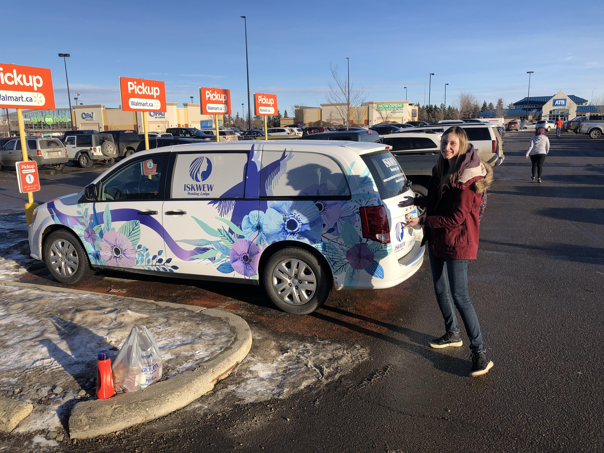
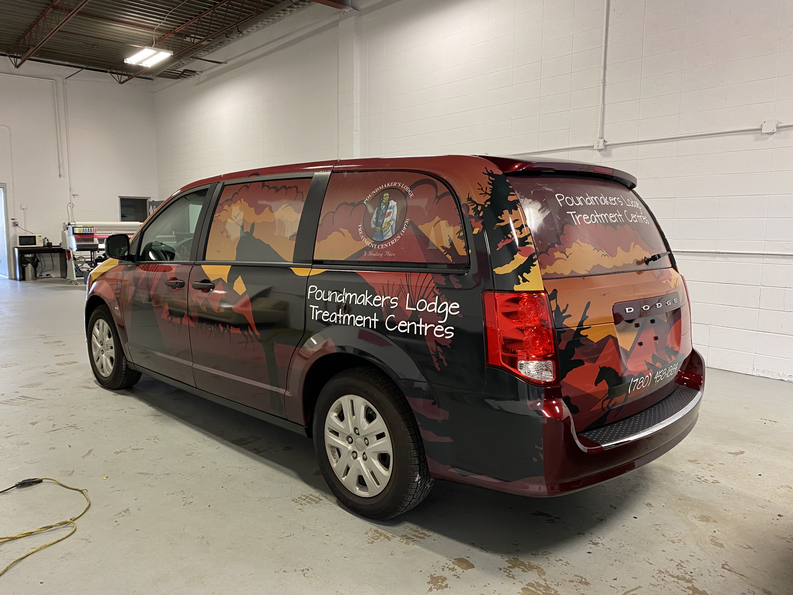
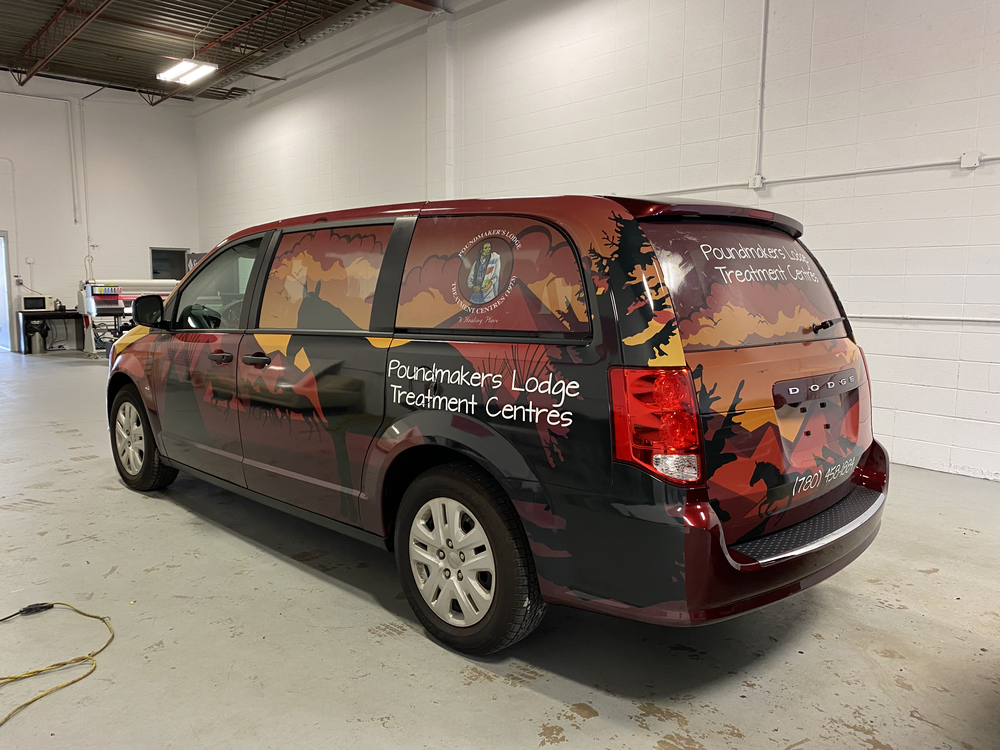

Poundmakers Treatment Centre
Multiple Van Wrap Designs

Multiple Van Wrap Designs
One of my first vehicle wraps, this was a great learning experience! As I improved my knowledge of the tools in Illustrator, and worked through a number of versions. Up to this point they have three different designs actually printed out onto vehicles! I had the invigorating experience of coming out of a store parking lot in St. Albert and there in front of me was the floral design wrapped on a van. I got a picture of me standing in front of it, it was so exciting to see the digital design in physical print!

 
